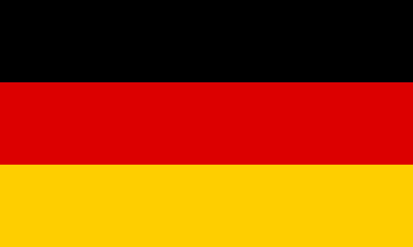

Imagem que representa o Euro em png

Video que fala sobre a economia da Alemanha
A economia da Alemanha é a economia mais importante da Europa e é a quarta potência econômica mundial depois dos Estados Unidos, China e Japão. É uma economia de mercado na qual a seguridade social tem um peso muito grande na economia, tendo os alemães direitos sociais muito extensos. O país passou por grandes reformas de livre comércio antigamente, deixando de ser o "homem doente da Europa" para ser a maior e mais robusta economia do bloco europeu na atualidade. A reunificação teve um impacto significativo no crescimento da parte ocidental do país, com grandes quantidades de dinheiro sendo usadas para financiar a reestruturação da porção Oriental.
As indústrias metalúrgicas e químicas têm um significante papel na economia da Alemanha, enquanto na agricultura, a média propriedade familiar, altamente mecanizada predomina. A cidade de Frankfurt é o principal centro financeiro da Alemanha e da União Europeia, onde está localizado o Banco Central Europeu e a Bolsa de Valores de Frankfurt. As indústrias e as empresas do setor terciário da Alemanha são bem dispersas pelo país, o que provoca grande tráfego aéreo e rodoferroviário.
O país é o sexto no ranking de competitividade do Fórum Econômico Mundial.
Sua Principal Moeda é o Euro
Voltar